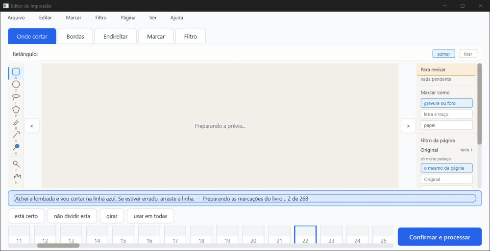
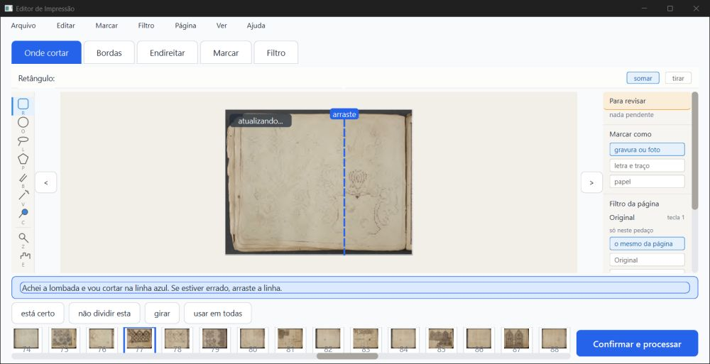
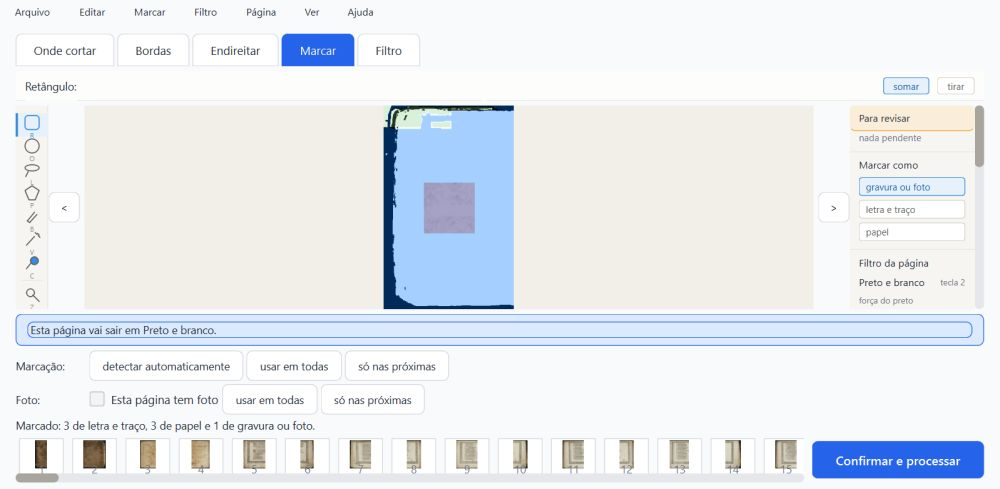
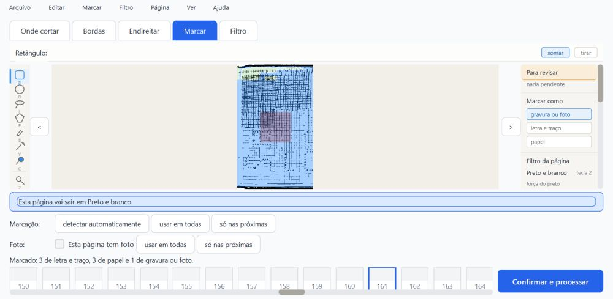
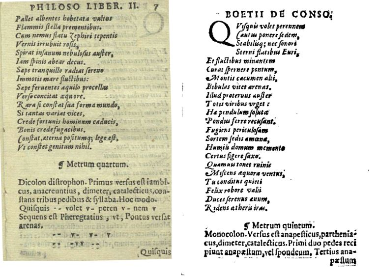
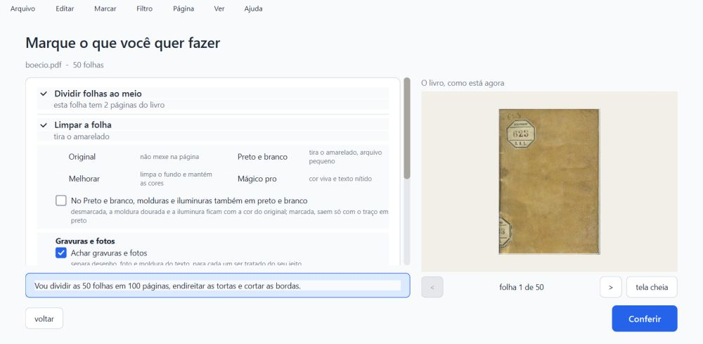

PRONTO PARA CONFERIR, com uma ressalva que vale a pena consertar antes de levar ao Kaique.
A gravação por trás fez o que prometia:
projeto.json nunca ficou estragado nem pela metade;A ressalva (R-A): trocar de livro pelo Ctrl+O menos de ~0,6 s depois de uma mudança perde essa mudança. Isso não é do conserto novo: o código de antes (fee743b) faz o mesmo. Mas a mensagem do commit 9a367de diz que "trocar de livro continua gravando na hora", e isso não é verdade pelo Ctrl+O.
Não é "aprovado": só o Samuel marca.
O que foi conferido:
fase2-geometria (worktree geometria) em 858f314, com os commits 9a367de (R1), 29f01ea (R2) e 858f314 (R5);%LOCALAPPDATA% não foram abertos.Tudo rodou numa pasta de dados de teste própria (verificador-2/dados/), com cópias dos projetos e cópias do programa feitas por git archive:
858f314;fee743b;aab746f.Os dois projetos de teste vieram do verificador anterior e foram criados pelo programa antigo (aab746f):
projeto.json de 3.009.926 bytes;A janela de teste é uma instância minha de 1600×821 px (1280×657 pontos), fora da tela. Foi pilotada só com mensagens nativas e fechada com WM_CLOSE (ou morta de propósito com TerminateProcess, no item c2).
Defeito conhecido (decisão do Samuel, 28/09): a moldura dourada e a iluminura continuam sendo defeito conhecido da Fase 1. Este item não mexe em imagem.
Este parecer continua o trabalho de um verificador interrompido. Aproveitei os scripts dele e as duas rodadas de folhear que ele completou (sieb1 e sieb2, mesmo código). Refiz os testes de máquina e duas rodadas de folhear (sieb3 e sieb4). Todos os testes de integridade são meus (scripts/integridade3.py, scripts/processar_logo_v3.py, scripts/folhear_v3.py).
O laço de espera do piloto: ele olha a resposta uma última vez depois do tempo-limite, e o tempo-limite passou para 60 s. Não houve nenhum "sem resposta". O clique também ganhou limite (30 s), e nenhum clique se perdeu.
| Item | Como | Resultado |
|---|---|---|
| (a) pytest, um arquivo por vez | máquina | 1406 passaram, 59 pularam, 0 falhas (73 arquivos, ~10,5 min somados). Os 59 pulados são de OCR (dados fora do git). test_gravar_por_tras.py: 8 de 8. Nada precisou ser repetido. |
(a) teste_botoes.py |
máquina | 132 ações, 0 falhas. Rodou numa cópia git archive (trabalho/novo), com a saida_teste dela. |
| (a) o teste novo pega o defeito? | máquina | Rodei test_gravar_por_tras.py contra o código de antes (fee743b): 2 falham e 6 dão erro. Os erros são funções que ainda não existiam, então isso só mostra que o teste não passa sem o conserto. |
| (b) janela respondendo durante a conversão | máquina + olho | Responde. São 2 rodadas minhas no Siebmacher, folheando sem parar do "0 de 268" ao fim: • sieb3: 702 cliques; • sieb4: 711 cliques. Cada clique foi atendido em no máximo 0,235 s (mediana 0,13 s), e a página andou em todos. Maior parada da janela durante a conversão: 0,74 s. Foi uma vez só, no instante em que a tela de conferir aparece, antes do primeiro clique. Depois disso, nenhuma parada de 0,25 s ou mais até o fim. Detalhe na seção 2. |
| (c1) mudar zona, corte e filtro e fechar logo | máquina + olho | Tudo lá. Fiz 3 vezes, cada vez numa página diferente (p160, p170, p180), com o fechamento (WM_CLOSE) a 0,18 s, 0,65 s e 1,0 s da última mudança. Nas 3 vezes, o disco ficou igual à memória (filtro, corte e zonas). Ao reabrir, as 3 páginas estavam como antes de fechar. |
| (c2) matar o processo no meio da gravação | máquina + olho | O projeto.json nunca estragou. Foram 13 mortes, em momentos diferentes: • antes de a gravação começar; • com o .novo vazio; • com o .novo inteiro mas ainda não trocado; • logo depois da troca. Nas 13, o arquivo é JSON inteiro, com 268 páginas e todas no formato novo. A mudança anterior estava sempre lá. A última mudança ficou em 3 e se perdeu em 10. Nenhuma outra página mudou. O resumo.json sempre legível, e não sobrou nenhum processo auxiliar. |
| (c2) matar durante a conversão de um projeto antigo | máquina | Nada estragou. Foram 6 mortes: • 2 quando a cópia de segurança aparece; • 2 folheando, no meio de uma gravação por trás; • 2 em momentos quaisquer. O projeto.json ficou sempre inteiro. No fim, depois de deixar terminar, ele é byte a byte igual ao de uma conversão sem interrupção (sha256 28e46ed…). |
| (c3) trocar de livro logo depois de mudar | máquina + olho | Perde a mudança se a troca vier antes de ~0,6 s (ressalva R-A). Com o Ctrl+O 0,05 s e 0,54 s depois, o filtro mudado não chegou ao disco, nem depois de fechar. Com 0,63 s, 1,23 s, 1,55 s e 1,78 s, chegou. O código de antes do conserto faz o mesmo (perdeu com 0,05 s e guardou com 0,75 s). |
| (c4) processar logo depois de mudar | máquina + olho | O PDF sai com a mudança. No Boécio p.16, mudei o corte para "não cortar esta", acrescentei uma zona de gravura e escolhi Preto e branco. Cliquei "Confirmar e processar" 0,12 s depois. No PDF, a página 16 saiu em preto e branco (cor média 0,0, contra 37 a 39 nas vizinhas) e sem corte (251×369 pt, contra 228 a 234×348). O projeto.json ficou com as 3 mudanças. |
| (c5) o programa antigo abre o projeto convertido | máquina + olho | Abre. Testei o aab746f com o Siebmacher depois de todas as mudanças e mortes acima. As 268 páginas têm zonas, e a contagem de zonas e o filtro são iguais aos do disco em todas. Na p160, a zona de gravura feita no programa novo aparece no mesmo lugar, com o Preto e branco e sem corte. O erros.log ficou vazio. |
(d) cópia de segurança = o projeto.json de antes |
máquina | Idêntica byte a byte. O sha256 é 781f61b7… nas 4 rodadas de folhear (sieb1 a sieb4) e nas 3 cópias do teste de mortes: igual ao arquivo antigo. |
| R5, reticências na faixa | máquina | O texto da faixa, lido direto da janela, é "Preparando as marcações do livro… 0 de 268", com o caractere "…". No print, a fonte desenha as reticências como três pontos. |
Velocidade (teste_velocidade.py) |
— | Não rodado (~12 min, só com o PC parado). Ver a observação O4 sobre o tempo da conversão. |
As 4 rodadas usam o mesmo código e o mesmo projeto antigo, e folheiam sem parar durante toda a conversão. O vigia anota toda vez que a janela fica 0,25 s ou mais sem atender (um relógio de 25 ms dentro do programa).
| Rodada | Conversão | Cliques | Clique mais lento | Paradas ≥ 0,25 s durante a conversão |
|---|---|---|---|---|
| sieb3 (minha) | 187 s | 702 | 0,235 s | 1: 0,57 s, no início |
| sieb4 (minha) | 190 s | 711 | 0,232 s | 1: 0,74 s, no início |
| sieb1 (verificador anterior) | 150 s | 581 | 0,229 s | 2: 1,11 s no início (a tira de miniaturas pintando) e 0,36 s |
| sieb2 (verificador anterior) | 159 s | 604 | 0,233 s | 1: 0,40 s |
A travada de 6 s ou mais (R1) não voltou em nenhuma das 4 rodadas.
A parada do início vem quando a análise termina e a tela de conferir se monta. É a mesma hora em que o programa grava o projeto e a cópia de segurança na hora, de propósito. É uma vez só, antes de a pessoa começar a folhear.
Fora da conversão, ao abrir:
As duas coisas são de antes e não mudaram com estes commits.

Siebmacher (sieb3), durante a conversão, folheando: "Preparando as marcações do livro… 2 de 268". A prévia e as miniaturas ainda não chegaram porque troco de página a cada 0,27 s.

Depois da conversão: a faixa volta ao texto normal, e as miniaturas e a prévia aparecem.
Abri um por um todos os prints da pasta prints/, os meus e os do verificador anterior. Os meus somam 38 arquivos:
Achado sobre os prints: o print pelo Windows (PrintWindow) da janela fora da tela devolveu, em quase todos os testes de integridade, a tela inicial antiga, e não o que a janela mostrava. Exemplos: v3_c1_*, v3_c2_reaberto_marcar.png, v3_c3_* e v3_c5_antigo_marcar_p160.png. A mesma coisa acontece com os *_faixa_1.png, que são todos o mesmo arquivo.
É atraso de pintura da janela fora da tela, não defeito do programa: o estado foi conferido lendo a janela, e não pelo print. Por isso, nos testes de integridade gravei também o desenho que o próprio Qt faz da janela (*_qt.png). São esses que estão abaixo.

Siebmacher reaberto depois das 13 mortes (p.126, a última mudança que chegou ao disco): Preto e branco, e a zona de gravura (o quadrado roxo) no lugar.

O programa ANTIGO (aab746f) abrindo o projeto convertido e mexido pelo novo, p.160 (mudada no c1). A zona de gravura está no mesmo lugar em que foi desenhada no programa novo, com o Preto e branco e sem corte. "Marcado: 3 de letra e traço, 3 de papel e 1 de gravura ou foto."

O PDF processado 0,12 s depois da mudança. À esquerda, a p.15 (sem mudança, Original e cortada). À direita, a p.16 (mudada): preto e branco e sem corte (as marcas da borda aparecem). Não consegui medir a diferença da zona de gravura no PDF: a conta de meio-tom não separa uma da outra nesta resolução. A zona está gravada no projeto.

A troca de livro pelo Ctrl+O: a janela vai para o Boécio. O Siebmacher fica com o que estava no disco nessa hora.
Medido:
fee743b (antes do conserto): perdeu com 0,05 s e guardou com 0,75 s, 0,89 s e 1,24 s.Pelo código (ui/janela_principal.abrir_livro): ao trocar de livro, o programa só grava o livro de antes se a conversão das zonas ainda estiver rodando (_parar_a_conversao_das_zonas(gravar=True)). Nos outros casos não grava. O relógio de salvar (600 ms) que estava para disparar dispara depois da troca, já para o livro novo. Então a mudança feita no livro de antes, nos últimos 0,6 s, não vai para o disco nunca.
O fechar e o processar gravam na hora; o Ctrl+O, não. A mensagem do 9a367de diz "Fechar, trocar de livro e processar continuam gravando na hora", e isso não é verdade para o Ctrl+O.
Sugestão: gravar na hora (_salvar_agora) o livro aberto no começo de abrir_livro, antes de trocar self.projeto.
resumo.json pela metade faz o projeto sumir da lista (baixa, já existia)O resumo.json é escrito direto por cima (write_text), sem o arquivo ao lado e a troca que o projeto.json usa. Agora essa escrita é feita no fio de fundo (_escrever_resumo).
Num teste sem janela, cortei o resumo.json de uma cópia ao meio. O projeto sumiu da lista (projetos.listar() devolveu vazio), com o projeto.json intacto ao lado. Abrir o mesmo PDF também não o acharia, porque achar_por_assinatura usa a mesma lista.
Nas 13 mortes, o resumo.json nunca ficou pela metade, porque o arquivo é pequeno (~700 bytes) e a janela de risco é minúscula. Mesmo assim, o efeito é "o projeto do Kaique sumiu".
TerminateProcess mata o programa, mas o Windows termina de gravar o que já recebeu. Uma queda de energia ou um disco USB puxado é outra coisa: o projeto.json.novo é trocado sem antes forçar a gravação no disco (fsync), e isso não dá para testar aqui. Já era assim antes destes commits.
Se o programa morre depois de fazer a cópia e antes de gravar o projeto.json no formato novo, a próxima abertura faz outra cópia. Com 6 mortes, ficaram 3 cópias, todas inteiras e iguais ao arquivo de antes. Nenhuma ficou pela metade, mesmo morrendo no instante em que a cópia aparece. Nada se perde; é só arquivo a mais.
As rodadas do verificador anterior, com este mesmo código, levaram 150 a 159 s. No primeiro parecer, antes do conserto, ~112 s, também folheando.
Não sei se é o conserto, a carga do PC ou o folhear contínuo. Folheando a cada 0,27 s, o relógio de salvar quase não chega a disparar, então a gravação por trás não deve ser a causa. Isso só se resolve com o teste_velocidade.py com o PC parado, que não rodei.
_sair_da_conferencia, que grava na hora pelo código, mas não testei).fee743b. A mensagem do 9a367de diz o contrário. Registro: trabalho/c3b_v3.out, trabalho/c3b_antes_v3.out e trabalho/c3_v3.out.resumo.json é escrito sem arquivo ao lado e troca. Se ficar pela metade, o projeto some da lista. Demonstrado numa cópia sem janela.scripts/integridade3.py (c1, c2, c2conv, c3, c3b, c5), scripts/processar_logo_v3.py (c4), scripts/folhear_v3.py (b), scripts/pytest_por_partes_v3.sh. Ficam fora do git.trabalho/pytest_partes_v3.log, trabalho/teste_botoes_v3.log, trabalho/folhear_sieb3.log, trabalho/folhear_sieb4.log, trabalho/c1_v3.out, trabalho/c2_v3.out, trabalho/c2conv_v3.out, trabalho/c3_v3.out, trabalho/c3b*_v3.out, trabalho/c4_v3.out, trabalho/c5_v3.out, trabalho/integridade_c2_v3.json. Ficam fora do git..md e .html) e as imagens pequenas em imagens/. O .pdf fica na pasta.Editor de Impressão · gerado em 06/10/2026 às 01:34